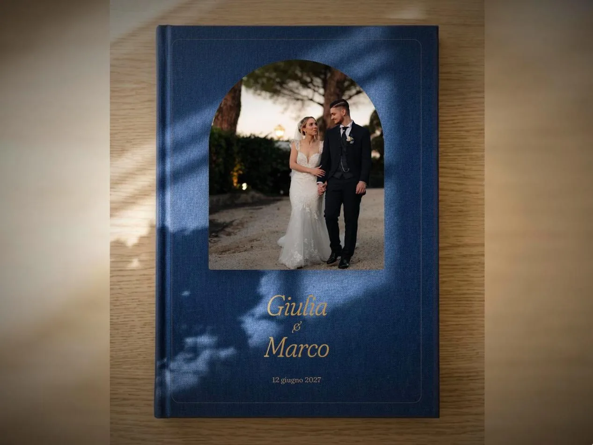
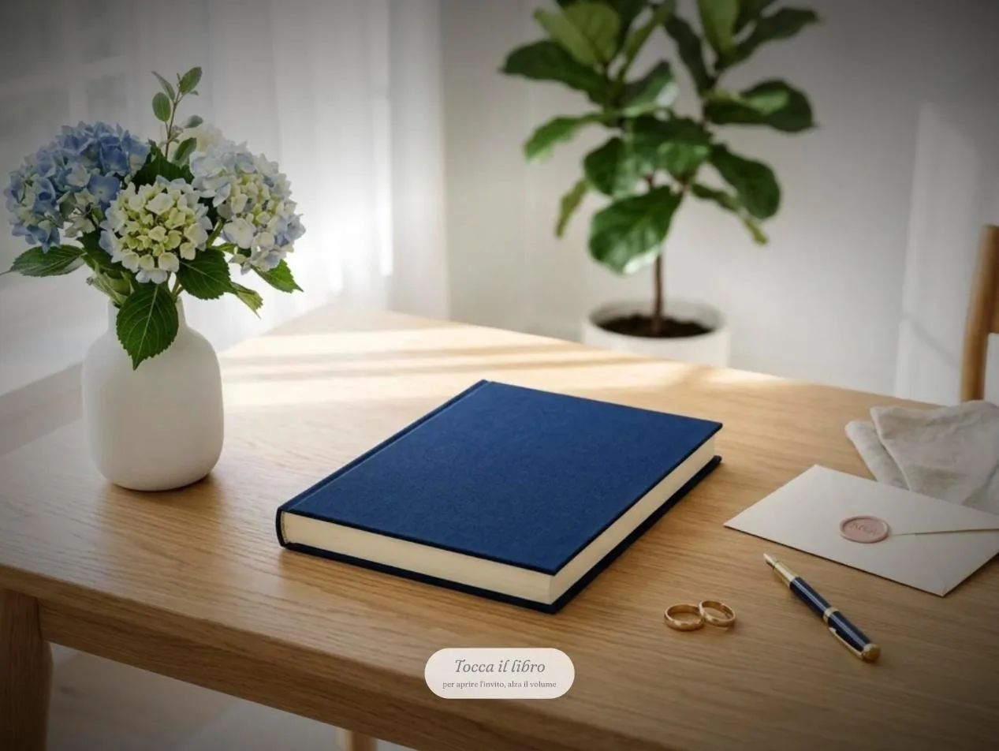
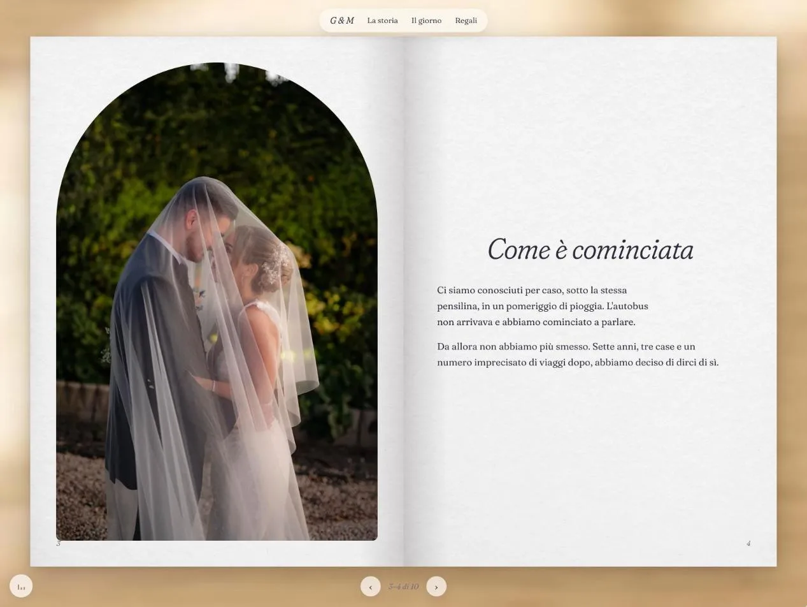
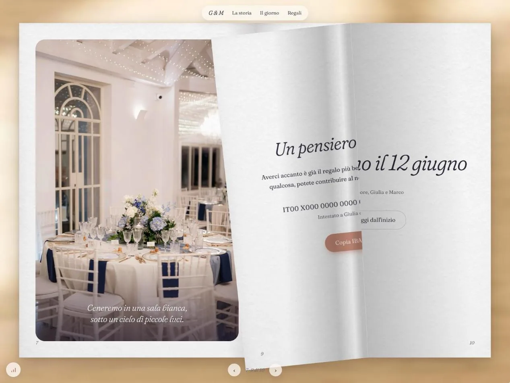

Una proposta per raccontare la vostra storia pagina dopo pagina, e la scaletta da completare insieme prima che io scriva e impagini il libro.

L'idea
Gli ospiti ricevono un link. Quando lo aprono non trovano una pagina da scorrere, ma un libro vero appoggiato su una scrivania, che si sfoglia girando le pagine come se fossero di carta.

La stanza compare dal buio, piena di luce. Al centro c'è il libro chiuso, con l'invito a toccarlo. Parte la vostra canzone.
La camera si avvicina fino a guardare il libro dall'alto. Sulla tela compaiono la vostra foto, i nomi in oro e la data.

Il libro si apre da solo. Da lì si sfoglia con il dito o con il mouse: la pagina si piega come un foglio vero.
Sul telefono il libro occupa tutto lo schermo, una pagina alla volta. È lì che lo apriranno quasi tutti i vostri ospiti, quindi ogni pagina è pensata prima di tutto per essere letta da smartphone. Nelle immagini nomi, date e testi sono di esempio: verranno sostituiti con i vostri.

La pagina mentre si gira: si vede la carta che si piega e l'ombra sulla pagina sotto.
La storyline
Questa è la scaletta che vi propongo. Ogni capitolo occupa una o due pagine del libro. Per ognuno trovate cosa si vede, cosa mi serve da voi e qualche domanda per aiutarvi a scrivere. Togliete, spostate o aggiungete capitoli liberamente: è la vostra storia.
La foto dentro una finestra ad arco, i nomi in oro, la data.
La prima pagina dopo la copertina, come nei libri veri: una frase sola, rivolta a chi sfoglia.
Per esempio: «Questo libro è per te», «A chi ha fatto parte della nostra storia».
Due o tre righe che dicono la cosa più importante: vi sposate e volete i vostri ospiti accanto.
Una vostra foto a tutta pagina a sinistra, il racconto a destra.
Dove eravate? Chi ha parlato per primo? Cosa avete pensato l'uno dell'altra? C'è un dettaglio buffo che raccontate sempre?
Da due a quattro pagine di ricordi: ogni pagina una foto con una didascalia breve, come in un album.
Il primo viaggio insieme, la prima casa, un animale, una festa, un'avventura andata storta e diventata un ricordo bellissimo.
Il momento del sì, raccontato da uno dei due o da entrambi.
Dove è successo? Era una sorpresa? Com'è andata davvero, emozione e imprevisti compresi?
Un cielo al tramonto con giorni, ore e minuti che mancano al matrimonio.
Si aggiorna da solo: mi serve solo la data e l'ora della cerimonia.
Il programma con orari e luoghi. Ogni luogo ha il pulsante per aprire il percorso su Google Maps.
Una foto della location con una frase, accanto le indicazioni sul dress code e i colori della giornata.
La lista nozze o l'IBAN, con il pulsante che lo copia in un tocco.
Il saluto finale e la vostra firma. Poi la quarta di copertina chiude il libro.
Da decidere insieme
Queste pagine non sono nella scaletta base. Segnate quelle che volete aggiungere.
Un modulo con cui gli ospiti rispondono se ci saranno, quanti sono e se hanno allergie. Le risposte arrivano a voi.
Indicazioni da fuori città, parcheggi, hotel consigliati vicino alla location.
Una pagina per presentarli, con foto e due righe su ciascuno.
Le portate della cena, se volete svelarle in anticipo.
Gli ospiti suggeriscono una canzone da far suonare alla festa.
Un'idea vostra che non trovate qui.
Come volete che suoni la vostra storia? Scegliete il tono più vicino a voi.
Caldo ed emozionante, come una lettera d'amore.
Leggero e divertente, con gli aneddoti che fanno ridere gli amici.
Frasi brevi ed evocative, più immagini che racconto.
Diretto e sincero, come se lo raccontaste a voce.
Mi mandate i testi seguendo la scaletta, io li sistemo per farli stare bene nelle pagine.
Facciamo una chiacchierata di mezz'ora in cui mi raccontate la vostra storia, poi scrivo io e voi correggete.
Il materiale
Potete mandarmi tutto su WhatsApp o per email, anche un po' alla volta.
A presto,
Mirko · mircode